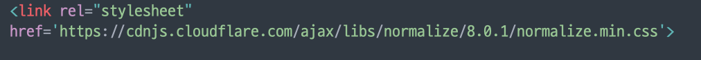

1. CSS란?
- CSS(Cascading Style Sheets)
- HTML 로 구조화된 문서를 어떻게 브라우저 상에 렌더링할지 표현 방법을 정의하기 위한 언어
• HTML 은 구조화에 집중하고 (Semantic Web 태그 기반, 의미 표현 + 기본 HTML 태그로 구조 표현)
• CSS를 통해 화면 렌더링 표현 방법을 정의함
• javascript 로 사용자 인터페이스등을 정의함
2. Selector(CSS Selector)
- HTML 문서의 특정 부분에 대해 렌더링 방법을 정의하기 위해서는 특정 부분을 선택할 수 있어야 함
- CSS Selector 는 이런 특정 부분을 선택하기 위한 문법
- CSS Selector 로 HTML 문서 특정 부분을 정의한 구문을 Rule Set 이라고 부르며, 이와 같은 'Rule Set'을 'Style Sheet' 라고 부름
- property(속성)과 각 property별 설정 가능한 value(값)는 미리 정의되어 있음
3. HTML과 CSS의 연동방법
1) 적용할 태그에 style 속성으로 넣기 -> 가급적 사용하지 않는게 좋음

2) HTML <head> 안에 <style> 태그로 넣기

3) HTML <head> 안에 CSS파일로 링크하기 -> 이 방법을 가장 많이 사욤함(중요)

4. Reset CSS(CSS 초기화설정)
- 웹브라우저마다 각기 다른 default 스타일이 지정되어 있으므로, 이를 초기화하여, 다양한 웹브라우저에서도 동일한 스타일로 표시되도록 하는 설정
- W3C 등에서 공식적으로 권장하는 것이라기 보다, 실무에서 필요에 의해 임의로 만든 설정
- 스타일을 초기화시켜주는 다양한 기법이 있지만, 최근에는 normalize.css를 많이 사용함
-cdn 을 통해서 링크시켜줄 수 있음
- 기본 스타일은 남겨두고, 브라우저별로 다를 수 있는 스타일만 초기화
